‘La indecisión es la llave a la flexibilidad’
|
||
‘La indecisión es la llave a la flexibilidad’
|
|
********************************************************************************************* Newer news can be found on scotlandnews |
| Barranchas del Cobre (Copper Canyons), Mexico, Nov 8-11. | ******************************************************** ************************************* We have been out on the water again, this time in the Barranchas del Cobre (in English known as the Copper Canyons), in the Mexican state of Chihuahua. The Copper Canyons are a series of twenty gorges in a national park. They are the deepest in the North Americas, as my poor feet can testify. We spent a day getting to the canyon rim on the CHEPE Ferrocarril train (clase economica, of course), and the train journey is a trip`worth doing in its own right. 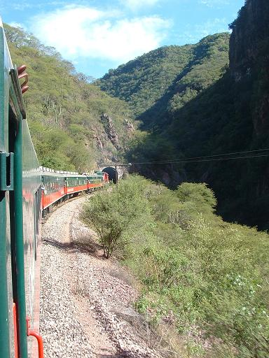 The track rises from the Pacific coast to a height of 2237 m where we got off at the really cold station of El Divisidero (which is Spanish for The Divisadero). The only hotel there charges US$144 so we slept three to a two-man tent in the train station. Perhaps the coldest train station I�ve ever slept in, but certainly not the best-appointed. 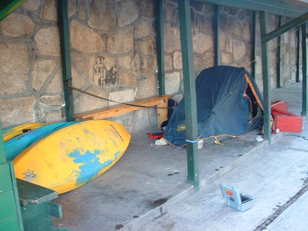 The next morning (early) we managed to secure the services of Jilo and his burros to guide us and carry our boats down into the canyon. Bargaining began at US$200 and 80 km, but we got it down to 50 and 8, respectively. 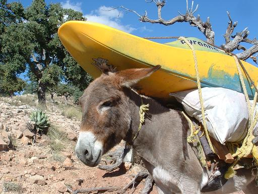 The hike down into the depths to the river level of about 600 m, with the changing scenery, landscape, and eventually, climate (cold at the top, banana trees at the bottom). I can�t do justice to the scale or impact of the canyons. It�s so vast, one couldn�t hope to get down through the endless side canyons without help. The photos can�t capture it either, so you�ll have to go yourself. 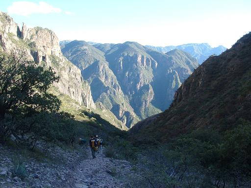 After six hours hiking in, we were thankful to find the river in low water, as we were hoping it would be. A high level in such a remote, committing gorge would have meant a hike out, and the burros didn�t seem up to it. We arrived at the riverside at dusk and camped out under the stars. On the water at 7:45 AM (!) as we were unsure of how long it would take to run the 46 km stretch of the Rio Urique we wanted to do. 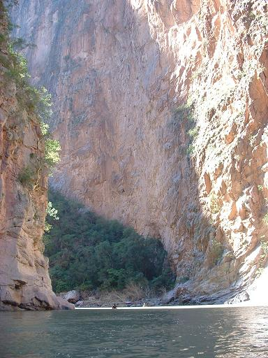 No major kayaking incidents to report - two portages, one of which we might have run in a less remote area. With all the camping gear and food in the back of the boats, it was a long day, again finishing at dusk in the village of Urique. As if from a dream, the first hotel we dripped into (having no other clothes into which to change) had a room with a bed each, hot showers, a restuarant across the road, and the following day�s bus stopping directly outside. The next day was spent getting back to base and onwards to pick up our original southerly direction. A five day detour encompassing a precipitous train ride up, a burro-lead descent, a long day on the water, a bus and train journey back out. |
After crossing the US/Mexico border no less than three times in one morning, we hot-footed out of Tijuana, taking the advice of everyone we met to skip it. On Mexico Highway 1, we travelled south for 1,500 km of the peninsula of Baja to La Paz, arriving just in time for a bowl of the finest pork soup en el mundo. On the way the road passes through an amazing shifting vista of cactus deserts, unexpected 1,000 meter peaks of twisting mountains, along the dunes of the Pacific surf beaches, a wine-growing region, the sheltered Gulf de Mexico (Sea of Cortez) side. We camped mostly on the beaches, finding them by chance or on recommendation of various gringos nort americanos migrating south to the surfing beaches for the winter. We visited various spots on the way, notably the mission town of San Ignacio, which was the first town to fit the notion I, at any rate, had of a Mexican village � a plaza where everything happens (volleyball the night we were there) with the Spanish church predominating one end, the official buildings at the other end. It is situated in a small valley about two km off the Highway 1, and more importantly in a river valley slightly below the elevation of the surrounding desert. So it has a semitropical microclimate, complete with palm trees, and the above mentioned cool shady square. We stayed out the road, with a self-appointed guard dog who kept the nocturnal horses and pigs at bay, all for a measly reward of some biscuits. I suspect this will not be our last encounter with a lame dog in Mexico. Here we are driving back along a dry river back from the beach. We also saw the town of Santa Rosalia with its steel church prefabricated in Paris by none other than Alec Eiffel, who as we know, built the Eiffel Tower � they didn�t like it, but he built it anyway, they didn�t know it was panoramic. We are in La Paz, the last major town in the south of Baja, awaiting the midnight ferry to the mainland. The next possible destination for Scotland �04 is Barranca del Cobre (Copper Canyon) if we can find a suitable kayaking section. If not, we will probably go anyway and hike some of it. Here are the boys waiting for Isolde�s Tower to open. |
We went to the world-famous San Diego, which is, according to Simon, one of the most famous world zoos in San Diego, or something. While there we pondered some age-old questions of philosophy. In a fight between a duck and a hippopotamus, who would win? |
| Eric, LA, and San Diego. | ******************************************************** ************************************* We finally left San Francisco and headed south to Los Gatos to meet up with Eric, Irish kayaking's longtime ambassador to California. We presented him with the keys to his new truck. The Ambassador has to travel in style. 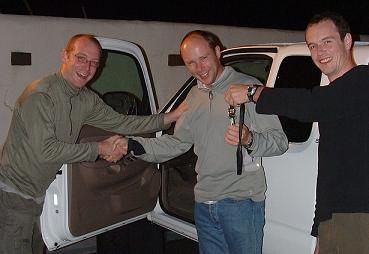 After that we went to Santa Cruz, and it turned out that it's not that far. The following night we saw the lunar eclipse in Oceanside en route to San Diego LA: Everything you heard is true - traffic, freeways, armed response security, and a big sign on the hill in case you forget. We spent three hours there, only two of them stuck in traffic. 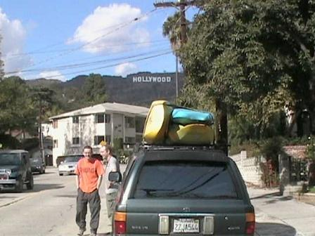 Last night we were in a seriously local bar in San Diego taking care not to discuss politics in this naval town. Tomorrow, we break for the border. |
| South Fork of the American River. | ********************************************************************************************* It's often best the get the disastrous stuff out of the way upfront, so in an unusual turn of events, that's what we did. No major expedition of six months in length is worthy of the name unless there is the involvement of the local police and, if possible, a dramatic nighttime helicopter extraction. First paddling of the trip at the weekend - South Folk of the American River - nice easy class 3 - 20 miles of it in low flow. Turned out to be a real epic - Simon opted to drive the car shuttle while blind probe duties were carried out by Jim, Ferg, and Paul McGrath. Y'all know Paul? He's a friend from the canoe club who now lives in San Francisco. This is Paul at the top, practicing his low braces and so forth. Always practices your low braces and so forth if you are going paddling for the first time in a few years. 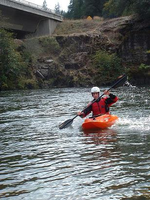 This being America, the river was longer than we had imagined. Paul took a few swims, got a little tired, got his roll, got a lttle more tired, missed his roll. As it got dark (surprise, surprise, we ended up running the river in the dark), Paul started to miss his roll more often, and I think, he was also missing his happy, sedentary lifestyle, his apartment by the Golden Gate Park, and the lovely Robin. Y'all remember Robin? She remembers you guys, some more fondly than others. Meanwhile back on the river, it was decided to walk out at 6:48 PM. Ferg and Paul started to hike down the rough riverbank, Jim paddled down to the takeout, where Simon was, frankly, a little concerned, given that it was dark at the time. With the urging of two local hunters - the nicest gun-toting, mountain lion hunting, church-going, Bush voters you're ever likely to meet on a dark road in rural California, the police were called in. Ferg and Paul, meanwhile, were slogging their way down the (steep, rocky, dark, overgrown) riverbank, having covered about 2.5 miles of the remaining 5 miles to the takeout. 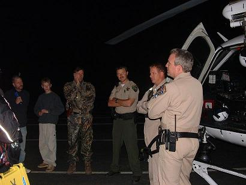 Scott, the nicest gun-toting El Dorado County California Highway Patrol officer you're ever likely to meet on a dark road in rural California, duly arrived at the bridge. His radio chatter had been picked up by the police helicoper, which happened to be in the area. The CHIPS guys (y'all remember Francis Poncherello and Jon Baker?) in the helicopter came thundering up the valley past the gathering crowd at the takeout, all spotlights, noise, and $3.5 million worth of gear. They spotted the guys immediately - their nightvision goggles picking out Ferg's headtorch no problem. 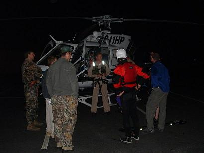 The river gorge was quite narrow, so they landed one skid on the rock and kept the rest of the chopper over the water, loaded up the two boys (who had been hiking out for two hours) and had them at the bottom minutes later (10:15 PM), tucking into pork chops and chocolate bars provided by another local guy and his son. 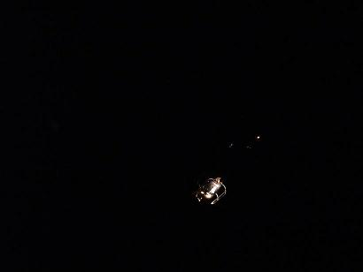 So, what did we do wrong? Paul is a sufficiently competent paddler for the river, but the length of it (20 miles) was too much for his level of fitness. Also, we should have been more clear about the details of the proposed walk-out route. What did we do right? We got off when it was time to get off and we called 911 when the hunters talked about mountain lions (there have been some attacks recently). The professionals were pleased with our equipment and tactics - on the river we had a headtorch, first aid kit, snap light, space blanket, matches, water, energy bars, and all that. 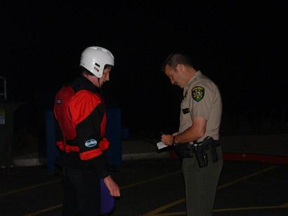 Some members of the expedition are anxious to point out that we didn't call in the helicopter - it was in the area anyway. The walking party were not concerned, just prepared to hike it out - left to their own devices, they had about about another two hours hike to the bottom. 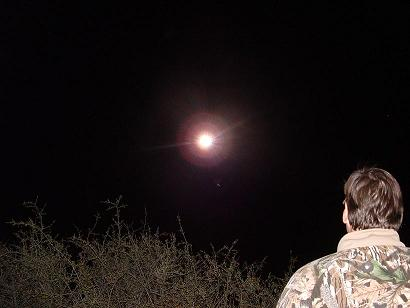 We paddled back in the following day, and retrieved the stashed boats without incident. That's the story Scotland '04 River Trip Number One. Let's hope it gets less dramatic as it goes on. |
| Finally, some kayaking. | ********************************************************************************************* On Saturday, October 23, after only ages getting sorted for gear and so on, we hit the water. We went a little playspot on the Sacramento River, just outside Sacramento, funnily enough. We dragged Paul McGrath away from his comfortable San Francisco lifestyle to get on the water. The spot is a little fun small hole, kind of like a deeper version of the Ballina wave on a good day. On the very first go, Jim is surfing, Simon clatters into him from above, citing the 'right-of-way' rule. On the very second go, Simon whacks himself with his own paddle. Day One minutes on the water: 5. Number of bloody noses: 1.
|
| We buy some boats. | ********************************************************************************************* At last we are getting towards a semblence of a kayaking trip, having bought some boats in Sacramento. We looked at the Dagger Juice and G:Ride, Necky Mission, LiquidLogic Trigger and Lil' Joe, before deciding that Scotland '04 needed matching boats. So we all bought Pyranha I:3s. For non-kayaking geeks who may have arrived on this page by accident, the boat comes in three sizes, approximately small, medium, and bubble butt. We bought one of each. I'm not going to tell you who got which one, but answers on a postcard, please. 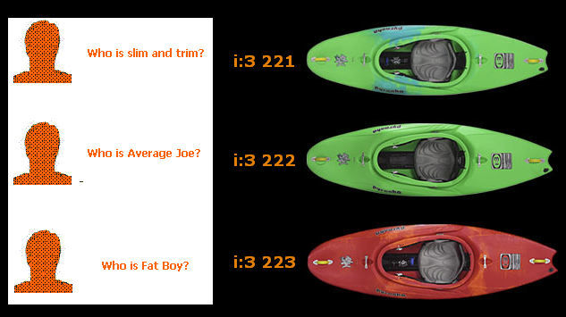 |
| Arrival in San Francisco (Wednesday, October 6) | ********************************************************************************************* No kayaking news to report yet - we have been here a few days and I tells ya, living in a house with two two-years olds is extreme stuff. Here they are looking charming. Bear in mind that the picture was taken with high-speed film, as regular film would just show two tornado-like blurs moving in a kind of furious Brownian motion. 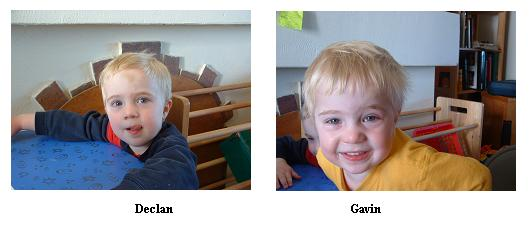 This second picture is perhaps more worrying. Some folks were concerned about my ability to look after the guys on the river, and I reassured them that everything would be great, but now I fear that looking after Ferg and Simon off the river might be beyond me. As you see, sometimes it is hard to tell which ones are the adults around here. 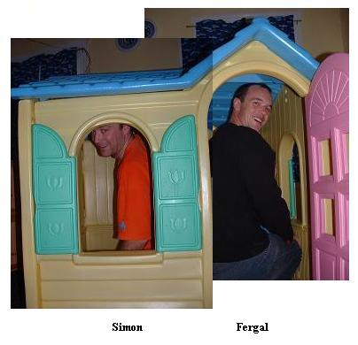 We are shopping for a 4x4 this week, that's our main priority. We have also acquired a small mountain of kayaking and camping equipment and a disturbingly large amount of items in the colour orange. Teeshirts, hats, sleeping bags, peli cases, buoyancys, cags - all tangoed. UCDCC Loyal Orange Lodge will march to Panama on the traditional route, just as our fathers and forefathers did before us, etc., etc.
|
| ‘La indecisión es la llave a la flexibilidad’ | ********************************************************************************************* Now that we have clarified the details of the going away party on Saturday (Yamamori on Georges Street, O’Neill’s of Pearse Street, and then back to 4D’s gaff), we can move on to announcing details of the trip itself. Some people have expressed an interest in coming out to catch up with the Scotland ’04 expedition at some point. We would love to see you out there if any of the following places and dates fit in with your holiday plans. For lots of the time we will be on the road moving along every day, so certain portions of the trip probably would not be so great if you only have two or three weeks. So, you should probably consider some of the places we intend to stop and base ourselves for extended periods - Southern Mexico, Costa Rica, Ecuador, and Chile. 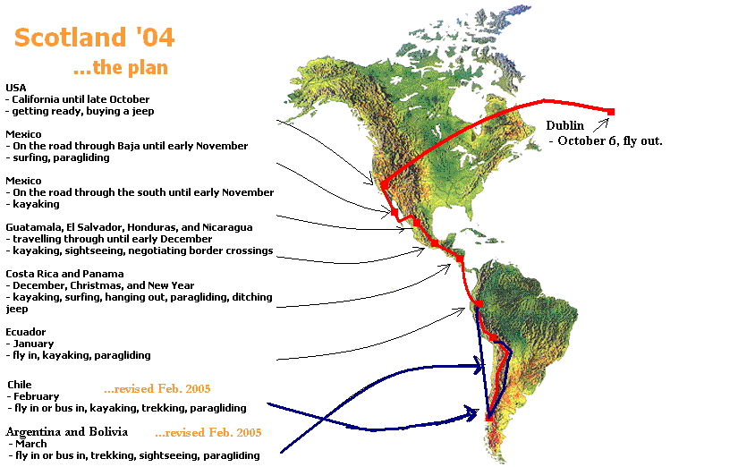 Nice map, eh? If you are looking to go river-running, we would suggest Costa Rica, where we will be for most of December. Costa Rica has every level of paddling, ranging from ICU-qualified right up to old-school UCD. An alternative to Kerry for New Year? If you are looking for us, we’ll be on the beach. Chile also looks good for kayaking, as well as for playboating for you bow-stalling types with your new-fangled ways of capsizing really fast. We’ll be down south in Chile, in the Futaleafu region. I’ll be the one drinking the Chilean Red. For those of you interested in a little paragliding, all the countries look good, apparently. Ecuador will be a mix of everything, we expect, but it is really the place about which we know least. For people interested in hiking and climbing mountains, you might want to look into coming out for the Peru section – we intend to drag Ferg’s lazy bones up the Inca Trail to Macchu Picchu and possibly sacrifice him to some easily-pleased deity. The expedition hits the Minty Highway on October 6; first stop is my mate Fino’s gaff in San Francisco, California.
|
| Scotland ’04 | ********************************************************************************************* It is with great pleasure that Jim, Simon, and Ferg announce the Departure Party for Scotland ’04. As you all well know, all club trips outside the country are Scotland trips, and this particular year’s trip is to Central and South America. Jim, Simon, and Ferg will be kayaking, paragliding, and swimming, respectively, all over the place for six months beginning on Wednesday week. Trip motto: ‘La indecisión es la llave a la flexibilidad.’ that’s Spanish for the old motto ‘Indecision is the key to flexibility,’ which carried us safely through many other Scotland trips. There will be a party on Saturday, October 2, (that is, really soon), to celebrate this upcoming event. We will be meeting up in a restaurant, before going to a pub, and onwards to the party. The restaurant, pub, and party venue have yet to be decided (see motto). You are all invited. Thanks to Herbert Park Rangers Football Club for hosting this announcement. 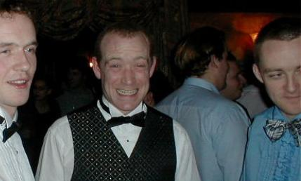 (l. to r. Fergal 'Officer' Mahoney, Simon 'Big Water' Barry, The Real Jim Kennedy) |